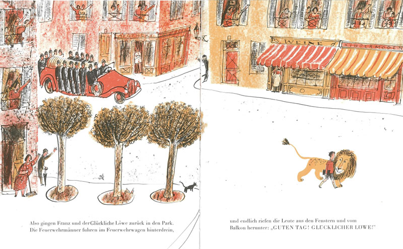

DS-Werkschau
Am vergangenen Dienstag brachten SchülerInnen aus Q1 und Q2 in 7 Szenen Ergebnisse aus dem DS-Unterricht in einer Werkschau auf die Bühne. Während der Q1-Kurs die Aufgabe hatte, die Moral eines Kinderbuches szenisch darzustellen, konnten die Q2-Schüler zum Abschluss ihrer DS-Zeit ihr Thema selbst wählen.
Ob im Prinz im Pyjama, Blauland oder Der Löwe im Zoo - die Aussagen der Kinderbücher kreisen sich im Prinzip um Freundschaft, dem Wunsch, akzeptiert zu werden, so, wie man ist, um dadurch in der Gruppe angenommen zu sein. Bunte Bilder der Bücher erscheinen auf der Großleinwand und die SchülerInnen spielen kurze Sequenzen mit wenig Worten, eher mit Bewegung, starker Mimik und teilweise mit Musik. Auf diese reduzierte Darstellung muss man sich erst einstellen, es gelingt zunehmend bis die längeren Szenen aus Q2 einen etwas intensiver in ihre Themen abholen. Leichte Kost ist es nicht – ganz anders als die Improshow der MitschülerInnen vor 3 Wochen.
Die Themen sind bewegend. Während die erste Gruppe die Handwerkerszene aus Shakespeares Sommernachtstraum in eine heutige Szene um Drogen und Sorgerechtsstreit um das Kind modernisiert, wählte die zweite Gruppe nach dem Durchblättern vieler Zeitschriften das Thema Tod und thematisiert den individuellen Tod gegenüber dem Massensterben bei einer Flugzeugkatastrophe.
Die Szenen sind komplett selbst geschrieben und mit theatralen Mitteln versehen. Auch hier steht die Sprache weniger im Fokus, um nicht zu dialoglastige Passagen zu haben. In der Gruppen wirkt ein Freeze, chorisches oder stummes Sprechen unterstützt mit Lichteffekten aussagekräftig und bühnenwirksam. Schließlich ist die letzte Inszenierung des Abends der Höhepunkt. Zwei Abiturientinnen setzen sich mit dem Thema „Perfekt sein“ auseinander. Ihre Szene ist mal ein Miteinander, mal ein Gegeneinander am Schminktisch, sie diskutieren, streiten, buhlen umeinander, neiden einander, tanzen, singen – immer auf der Suche nach sich selbst. Die schauspielerische Leistung ist fulminant!
H. v. d. Heyde


 Am 31. Januar 2019 haben wir unseren damaligen Schulleiter, OStD H.-J. Werner, von unserer Schule verabschiedet. Die
Am 31. Januar 2019 haben wir unseren damaligen Schulleiter, OStD H.-J. Werner, von unserer Schule verabschiedet. Die 


 Der Stadtverkehr Lübeck informiert zum Fahrplanwechsel der Linien 9-Leibniz und 17. Die Informationen sind
Der Stadtverkehr Lübeck informiert zum Fahrplanwechsel der Linien 9-Leibniz und 17. Die Informationen sind